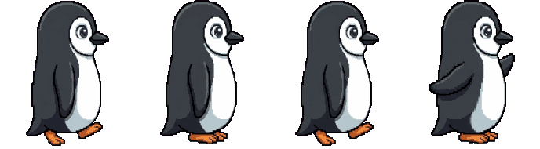
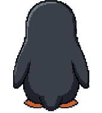

Firmenwebsites
Damit man erfährt, wer Sie sind, was Sie anbieten und wie man Sie erreicht. Schnell, schön auf dem Handy und leicht bei Google zu finden.
ab 1.500 € : Angebot zusammenstellen
Websites und Web-Apps nach Maß
Von der Firmenwebsite bis zum Tool mit Dashboard und Login: Wir gestalten, programmieren, veröffentlichen und kümmern uns um den Server. Sie sprechen direkt mit den Menschen, die sie bauen.




Jedes Projekt entsteht von Grund auf, passend dazu, wie Ihr Unternehmen arbeitet.
Damit man erfährt, wer Sie sind, was Sie anbieten und wie man Sie erreicht. Schnell, schön auf dem Handy und leicht bei Google zu finden.
ab 1.500 € : Angebot zusammenstellen
Bestellformulare, Berechnungen, Kundenbereich mit Login und ein Dashboard, um alles im Blick zu behalten. Die Website ist kein Schaufenster mehr, sondern Teil der Arbeit.
ab 5.000 € : Angebot zusammenstellen
Web-Apps, die wie eine normale App auf dem Startbildschirm liegen und sogar offline öffnen, ganz ohne App Store.
ab 7.500 € : Angebot zusammenstellen
Domain, Sicherheitsschloss (HTTPS), Server und Backups. Sie müssen davon nichts verstehen.
Rundum enthält Updates und kleine Text- und Bildänderungen. Bei jährlicher Zahlung zahlen Sie 10 Monate.
Richtpreise als Gesprächsgrundlage. Das endgültige, schriftliche Angebot hängt davon ab, was in das Projekt kommt. Die Registrierung der Domain (etwa 15 € pro Jahr) wird separat bezahlt.
Echte Websites, die gerade genutzt werden. Öffnen und ausprobieren.

Installierbare App
Sprach-App und spielbare Enzyklopädie, mit 197 Sprachen und 39 Wissensgebieten. Funktioniert offline auf Handy und Computer.

Tool für Unternehmen
Prüft, ob der Preis, den ein Lieferant für Diesel, Benzin oder Ethanol verlangt, plausibel ist, und gleicht dazu Daten von Petrobras, der brasilianischen Kraftstoffaufsicht und der Steuerbehörde ab.

Verkaufswebsite mit Dashboard
Individuelle Reiserouten: Der Kunde beschreibt die Reise und sieht sofort den Preis; Anfragen landen in einem Dashboard, mit fertiger Antwort per WhatsApp.

Digitale Publikation
Unabhängiges Magazin für Geschichte und Geisteswissenschaften, mit Inhaltsverzeichnis, Suche, Randnotizen und kopierfertiger Quellenangabe.

Unternehmenswebsite
Tierklinik in Salvador (Brasilien): Abteilungen, Untersuchungen, Leistungen und Fachgebiete auf 74 Seiten, mit WhatsApp und Route mit einem Tipp.

Website mit Verfahrensabfrage
Insolvenzverwaltung in Rio de Janeiro: Tätigkeitsbereiche, Verfahrensabfrage nach Unternehmen, Dokumentvorlagen und Kontakt.

Spiel im Browser und auf dem Handy
Karrierespiel rund um Jiu-Jitsu und MMA, kostenlos im Browser, auf dem iPhone und auf Android, mit PvP, Team-Ligen und Live-Ranglisten.

Firmenwebsite
Immobilienbüro in der Zona Sul von Rio, mit einer einseitigen Website, die Arbeitsweise und Stadtviertel vorstellt.
Projekte aus meinem Studium. Die Unternehmen sind erfunden; der Code ist Open Source.

Website mit Effekten
Ein Cyberpunk-Café, das es nicht gibt, mit Startbildschirm, animiertem Hintergrund, Speisekarte und einem Labor, um das eigene Getränk zu mixen. Es ist die Website im Simulator oben, auch in Versionen mit Bootstrap und Tailwind.

Firmenwebsite
Unternehmen für Tierfotografie, mit filterbarer Galerie, Expeditionen und Kontakt. Die Farbpalette stammt aus dem Biom selbst, und jede Farbe wurde nach den Kontrastregeln der WCAG geprüft.

Lernwebsite
Für alle, die noch nie von Brasiliens stachellosen Bienen gehört haben: ein 3-Minuten-Rundgang, was man tut, wenn man ein Nest findet, und ein kurzes Quiz. Entstanden aus einer Design-Thinking-Übung.
Das Café Aurora ist ein Café, das es nicht gibt, aus einer anderen Dimension. Schalten Sie Teile seiner Website ein und aus: Sie ändert sich sofort, und der Preis auch.
Projekt, ab 2.850 €
Richtpreise, wie bei „Website zusammenstellen“. Das Monatspaket (ab 25 €) kommt hinzu.
So eine Website möchte ichDas Café Aurora entstand als Studienarbeit im Fach Interface-Entwicklung. Im Vollbild öffnen
Was alle vor dem Start fragen. Was für Ihr Projekt gilt, steht schriftlich im Angebot.
Eine erste Schätzung: Eine Firmenwebsite dauert 2 bis 3 Wochen, ein Tool mit Dashboard 1 bis 2 Monate und eine installierbare App 2 bis 3 Monate. Den genauen Zeitplan für Ihr Projekt finden Sie im Angebot.
Die Hälfte bei Annahme des Angebots und die Hälfte, bevor die Website auf Ihre Domain geht, per Banküberweisung (SEPA). Bei Projekten ab 5.000 € sind drei Raten möglich: 40 % zu Beginn, 30 % nach Freigabe der Vorschau und 30 % bei Veröffentlichung.
Ja: Die Website läuft auf unserem Server, und das Monatspaket hält sie online. Es gibt zwei Pakete. Online (25 € pro Monat) umfasst Server, Sicherheitsschloss, eingerichtete Domain und Backups. Rundum (50 € pro Monat) bietet all das plus Updates und kleine Text- und Bildänderungen. Bei Vorauszahlung für das Jahr zahlen Sie 10 Monate.
Ja. Mit dem Dashboard ändern Sie Texte und Bilder, ohne jemanden anrufen zu müssen, und Sie erhalten eine kurze Einweisung und eine Anleitung. Bei Tools und Apps ist es enthalten; bei einer Firmenwebsite kostet es 600 € extra. Neue Seiten erstellen weiterhin wir.
Ihnen. Standardmäßig wird sie auf Ihren Namen oder Ihr Unternehmen registriert, als .de, .at, .ch oder nach Wunsch, und wir richten alles ein. Wenn Sie sich nicht darum kümmern möchten, übernehmen wir Registrierung und Verlängerungen für Sie.
Die gehören Ihnen: was Sie uns schicken, die Texte und Bilder, die wir für die Website erstellen (nach Bezahlung), und die Daten der Nutzer, etwa Bestellungen und Anmeldungen. Code, Layout und Design gehören Linu Sites; Sie nutzen die Website, solange das Monatspaket läuft.
Sie erhalten Ihre Texte, Bilder und Daten in einer Datei, bereit zum Mitnehmen. Möchten Sie die Website so mitnehmen, wie sie ist, können Sie den Code zum selben Preis wie das Projekt kaufen. Niemand ist gebunden.
Stellen Sie Ihre Website zusammen und sehen Sie sofort eine Schätzung von Preis und Dauer. Dann einfach per WhatsApp oder E-Mail senden: Die Nachricht ist schon geschrieben. Es darf auch nur eine Idee sein: Die Antwort kommt mit Fragen und nächsten Schritten.
Wählen Sie die Art für eine Schätzung
Richtpreis, „ab“. Was darüber hinausgeht, steht im Angebot, schriftlich, mit dem genauen Preis. Die Domain (etwa 15 € pro Jahr) kommt hinzu.